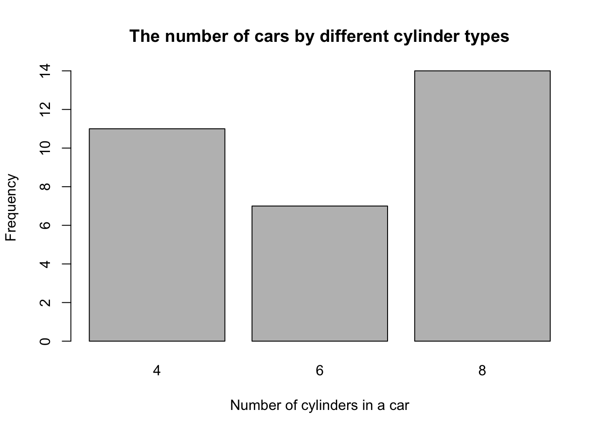
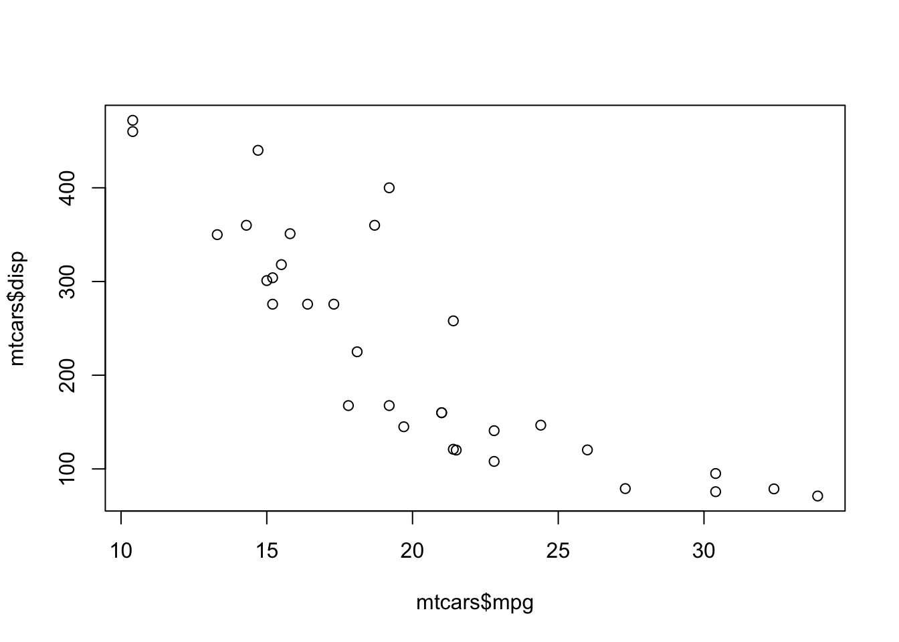
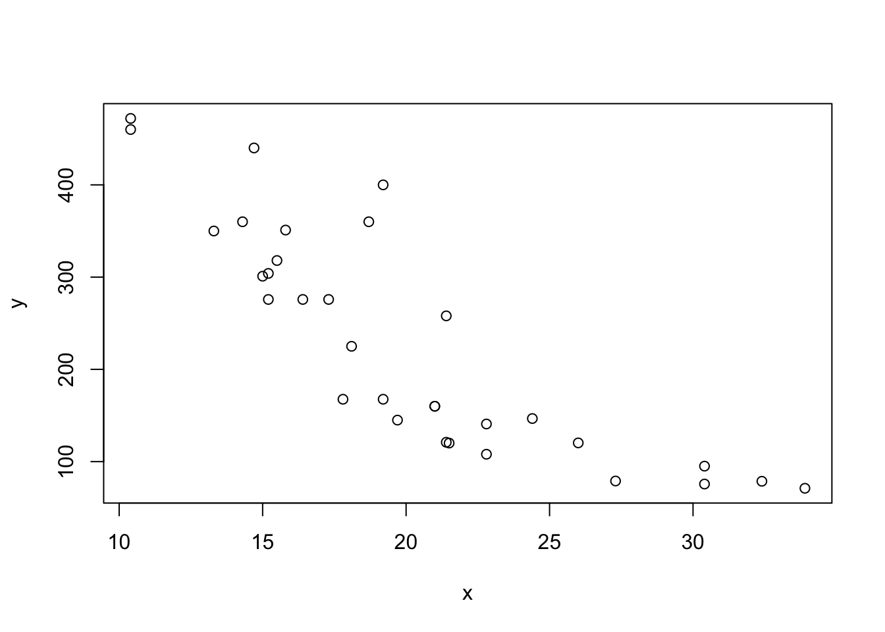
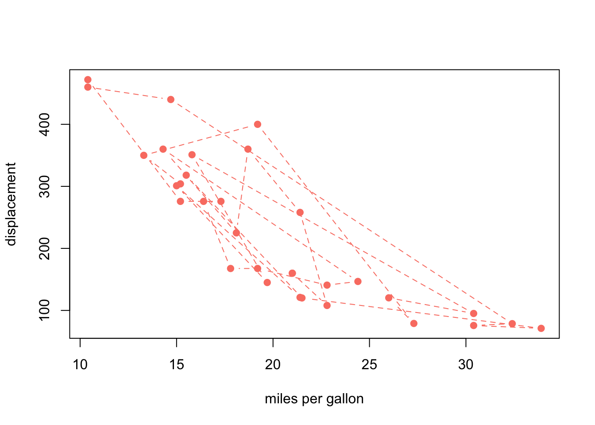
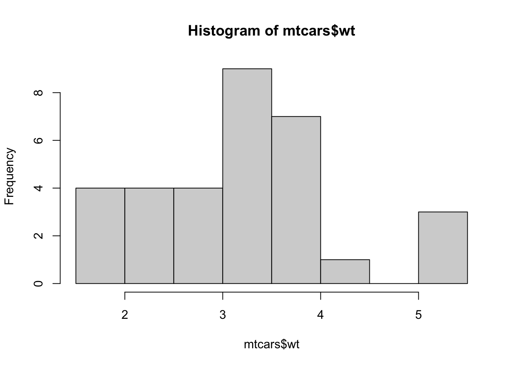
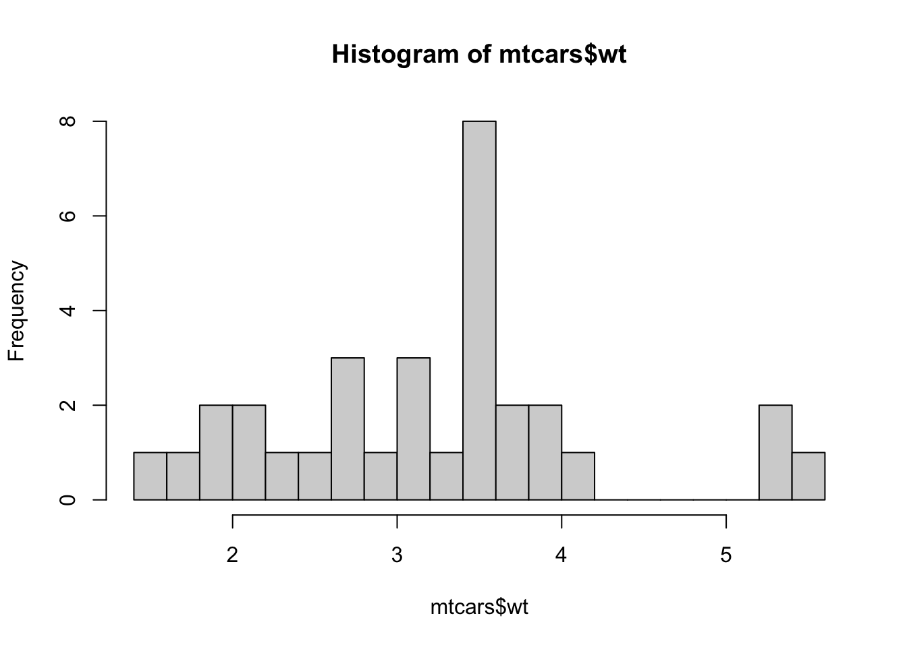
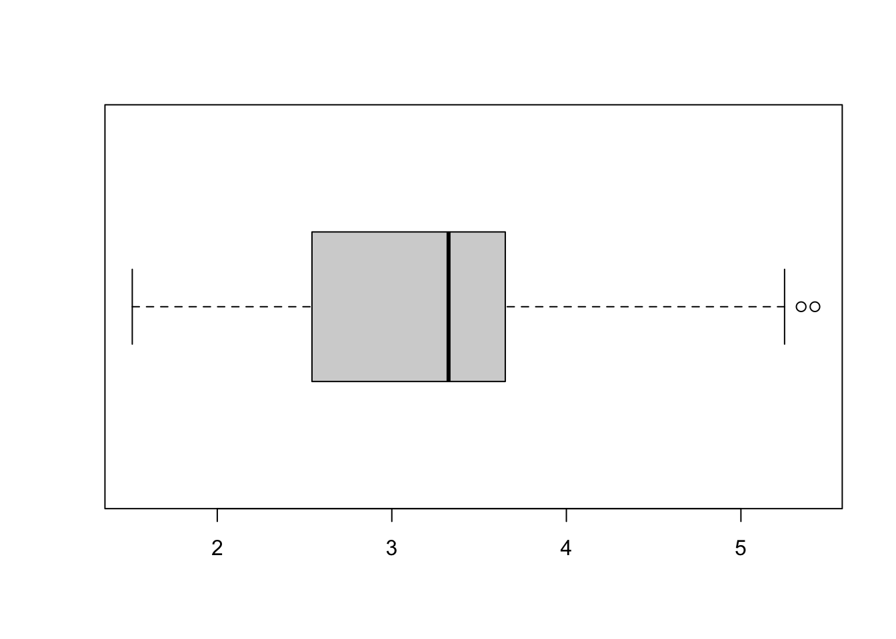

Chapter 5 R plot
5.1 Basic plots in R
5.1.1 scatter
Again, we will use the data frame (myDat) that we have created while importing the data from our computer and we will be using different columns to draw different graphs in this section. And, there are many types of graphs that you can plot using R, but we will cover a few of them in this class.
The first one we will learn is scatter plot. You need two variables to draw it and basically you look at the relationship between these two variables using scatter plot. The function to do it is simply plot()
x <- mtcars$mpg
y <- mtcars$disp
plot(x,y)
plot(mtcars$mpg,mtcars$disp)
plot(x,y)
plot(x,
y,
xlab = "miles per gallon",
ylab = "displacement",
col="salmon",
pch=19,
lty =2,
type = "b")
5.1.2 bar plot
The last type of graphs that we will cover today is the bar plot. If we want to know how many cars are there by the types of cylinders in the mtcars data type, we use the table() function. Then we use the bar plot to visualize the counts.
counts <- table(mtcars$cyl)
barplot(counts,
xlab = "Number of cylinders in a car",
ylab = "Frequency",
main = "The number of cars by different cylinder types")
5.1.3 histogram
The next type of graph we will cover is the Histogram. Histogram shows you the distribution of your data. For example you want to see the distribution of the displacement -
hist(mtcars$wt)
hist(mtcars$wt, breaks = 20)
hist(mtcars$wt, breaks = 10, xlab = "weight (1000 lbs)")
abline(v=mean(mtcars$wt), col="red", lty=2, lwd=2)
abline(v=median(mtcars$wt), col="blue", lty=3, lwd=2)5.1.4 box plot
The next type of plot is also very important to understand the distribution of your data, and that is a box plot.

boxplot
For example, if you want to see the distribution of the same weight of the cars using boxplot, the command is -
boxplot(mtcars$wt, horizontal = T) Most importantly, you can look at the data compared to other variable as well. For example, if you and to look at the MPG values by car cylinders, here is the code -
boxplot(wt~cyl,
data=mtcars,
main="Car weight Data",
xlab="Number of Cylinders in a car",
ylab="Weight (1000 lbs) of the cars")## Exercise